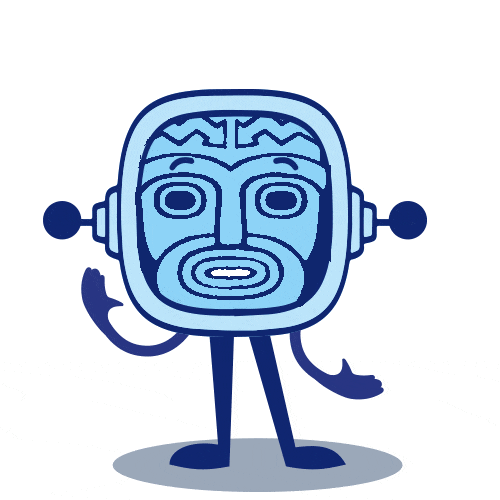

Tiki, estudiante de oceanografía y aventurero sin igual, ha oído que se proyecta una expedición desde Sudamérica a Polinesia en balsa. Esta expedición pretende demostrar que los actuales habitantes de Polinesia son descendientes de los indios de América del Sur.
La expedición está buscando científicos que quieran embarcarse en esta arriesgada expedición y que ayuden a tomar datos sobre astronomía, corrientes marinas, costumbres de los cetáceos y demás fauna marina, vientos, nuevos artilugios de supervivencia, artefactos contra tiburones…

Tiki lo tiene claro. Inmediatamente llama a su amigo Taka, estudiante de biología, para que se enrole con él.
Taka, muchacho reflexivo y de espíritu sosegado no lo ve tan fácil. Ve grandes peligros.
Sin embargo, Tiki tiene un gran poder de convicción, le explica a Taka que esto puede ser un trampolín de lanzamiento para su futuro profesional.Está decidido: ¡A atravesar el Pacífico!
COMPLETANDO EL EQUIPO
Taka está convencido. Pero le gustaría contar con alguien de su confianza que le ayudara con los cálculos y se sumergiera en el océano para tomar fotografías y muestras. Decide llamar a Toko.
- ¿Toko? - dice Tiki. - ¿Ese quién es?
- Querrás decir, esa quién es. Es una matemática y avezada buceadora que nos puede venir de perlas. Seguro que dice que sí.

Y, por supuesto, Toko no lo duda.
¡Ya está todo el equipo!
Ahora sólo falta refrescar conceptos y preparar otros nuevos para convencer al organizador de la expedición de que ellos tres (Tiki, Taka y Toko) son los científicos que necesitan.
¡A por ello!
Lectura facilitada
Tiki es un estudiante de oceanografía.
Tiki ha oído que se prepara una expedición
desde Sudamérica a Polinesia en balsa.
La expedición busca científicos que tomen datos sobre:
- Astronomía.
- Corrientes marinas.
- Costumbres de los cetáceos.
- Costumbres de la fauna marina.
- Vientos.
- Artilugios de supervivencia.
- Artefactos contra tiburones.
Tiki llama a su amigo Taka.
Taka es estudiante de biología.
Tiki está decidido a atravesar el Pacífico.
Taka llama a Toko para que le ayude con los cálculos y
tome fotografías y muestras del océano.
Taka es matemática y buceadora.
Ahora vas a recordar conceptos.
Aprenderás otros conceptos nuevos.
Tiki, Taka y Toko son los científicos de esta expedición
que te van a ayudar.
¡A por ello!
Ciencia que estudia los cuerpos celestes que hay en el universo.
Ejemplo:La astronomía estudia las estrellas y otros cuerpos celestes.
Animales mamíferos que habitan el medio acuático.
Ejemplo:La ballena azul y el delfín son cetáceos.
Viaje colectivo que se realiza con un fin determinado.El fin de la expedición puede ser científico, militar o deportivo.
Ejemplo:La expedición de Magallanes fue una expedición marítima española.
Animales marinos que viven en el mar.
Ejemplo:La fauna marina la conforman animales que viven en el agua salada de mares y océanos.
¿Sabías qué..?
En 1947 una expedición comandada por el aventurero noruego Thor Heyerdahl y 5 tripulantes más partieron de Perú y atravesaron el Pacífico hasta llegar a las islas Tuamotu (Polinesia Francesa). Lo hicieron en una embarcación hecha de madera de balsa a la que pusieron el nombre de Kon-Tiki.